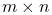
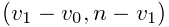
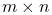
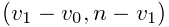
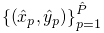

Sub-pixel 2D localization of molecules
Sub-pixel localization of single molecules with an accuracy below the diffraction limit is the basis of SMLM methods. ThunderSTORM supports the following localization methods: calculation of the centroid of the local neighborhood [1], the radial symmetry method [4], and fitting of point-spread function models by (weighted) least-squares methods or by maximum likelihood estimation [2, 3]. Users may also choose not to use any of the methods, thereby using the approximate positions of the molecules determined in the previous step. Note that the choice of method for sub-pixel localization of molecules is independent of the pre-processing methods described above.
-
Input:
A raw image
 of size  pixels and
a list of coordinates 
with approximate molecular positions.
of size  pixels and
a list of coordinates 
with approximate molecular positions. -
Output:
A list of coordinates  with sub-pixel positions of the molecules.
References
- [1] (2010) QuickPALM: 3D real-time photoactivation nanoscopy image processing in ImageJ. Nature Methods 7 (5), pp. 339–340. External Links: Document Cited by: Sub-pixel 2D localization of molecules.
- [2] (1979) The Advanced Theory of Statistics. London: Charles Griffin. Cited by: Sub-pixel 2D localization of molecules.
- [3] (2010) Optimized localization analysis for single-molecule tracking and super-resolution microscopy. Nature Methods 7 (5), pp. 377–381. External Links: Document Cited by: Sub-pixel 2D localization of molecules.
- [4] (2012) Rapid, accurate particle tracking by calculation of radial symmetry centers. Nature Methods 9 (7), pp. 724–6. External Links: Document Cited by: Sub-pixel 2D localization of molecules.
![[LOGO]]()